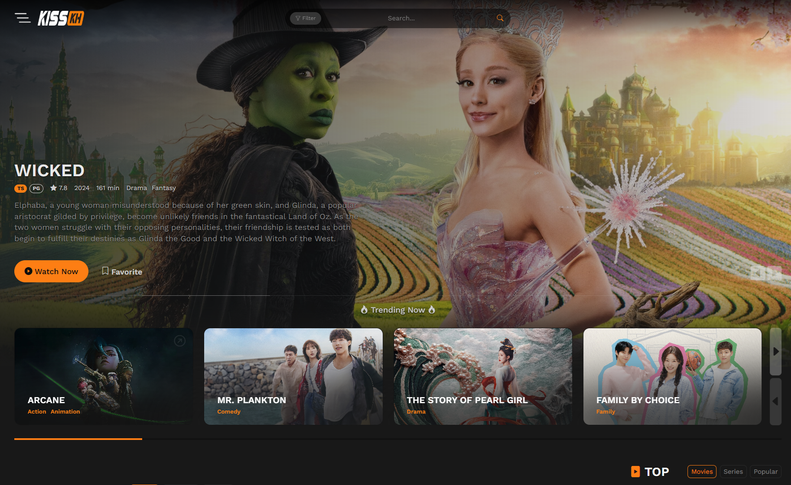

KissKh - Watch Popular Asian Dramas & Kshows in HD with English Subtitles
- KissKh live
- KissKh Official live
- KissKh Movies live
- KissKh Website live
Are you a fan of Asian dramas or Kshows? Do you enjoy immersing yourself in East Asia's captivating stories, unforgettable characters, and rich cultures? If so, KissKh is the perfect platform for you. In this article, we'll explore why KissKh is quickly becoming the go-to site for streaming Asian dramas and Kshows in HD with English subtitles, offering fans worldwide an easy way to enjoy their favorite shows with every word clearly understood.
1. What is KissKh?
KissKh is an online streaming platform dedicated to fans of Asian dramas and Kshows. It offers a vast selection of movies from Korea, China, Japan, and other Asian countries, all available in high-definition (HD) with English subtitles. Whether you're into romantic comedies, thrilling mysteries, or heartwarming dramas, KissKh has something for every viewer.
2. Why is KissKh Popular Among Drama Lovers?
KissKh stands out for its commitment to providing a seamless streaming experience for drama lovers worldwide. Offering free access and the ability to watch movies in HD, it's no wonder that KissKh has quickly become a favorite among users. It's like having a digital library of Asian dramas and Kdramas at your fingertips, ready to stream any time.
3. Extensive Library of Dramas and Kshows
When it comes to Asian dramas and Kshows, variety is key—and KissKh delivers. From Korean romantic comedies that will make you swoon to Chinese historical dramas that transport you to another world, the platform offers an impressive range. Whether you're searching for classic hits or the latest releases, KissKh ensures you always have something fresh to enjoy.
4. High-Quality Streaming with English Subtitles
For international viewers, language can often be a barrier, but with English subtitles available for all movies, KissKh makes it easy to follow along. In addition, the platform focuses on HD streaming, ensuring you enjoy every scene in stunning quality. The combination of HD video and accurate English subtitles enhances your viewing experience, making KissKh a go-to site for Asian drama streaming.
5. User-Friendly Interface
With KissKh, you won’t have to deal with a confusing website layout. The site’s intuitive design makes it easy to browse genres, search for specific titles, or discover new shows based on your preferences. Whether you're a tech expert or a casual viewer, KissKh ensures a smooth, enjoyable streaming experience.
6. The Benefits of Watching on KissKh
There are many reasons to choose KissKh for your Asian drama and Kshow needs. Here are just a few of the benefits:
- No subscription fees: Watch your favorite shows without any charges or subscriptions.
- Quick updates: Get the latest episodes as soon as they're released.
- Wide variety of genres: Whether you're into romance, action, fantasy, or historical dramas, there’s something for everyone.
- Community recommendations: Discover hidden gems through user reviews and recommendations.
7. How to Access KissKh?
Getting started with KissKh is simple. All you need is a reliable internet connection and a device like a smartphone, tablet, or computer. Simply visit the KissKh website, and you can begin exploring their extensive library of Asian dramas and Kshows right away. Plus, since it’s a free platform, you can start watching without needing to sign up.
8. KissKh vs Other Streaming Platforms
While many platforms offer Asian dramas and Kshows, KissKh stands out for several reasons:
- Free access compared to paid services like Netflix and Viki.
- No account required—just click and watch.
- Fresh updates with the latest episodes and popular titles.
- Community-driven recommendations help you find the best shows quickly.
In short, KissKh provides a cost-effective, user-friendly way to watch the best Asian movies and Kdramas online.
9. Is KissKh Safe and Legal?
When using free streaming platforms like KissKh, it's important to be aware of potential safety and legal concerns. While KissKh offers a broad range of content, the legality of free streaming can vary depending on your location. Be sure to use trusted antivirus software and avoid sharing personal information on sites that don't require it.
How to Stay Updated with New Releases?
One of KissKh’s standout features is its quick updates, with the latest episodes often uploaded within hours of their release. To stay on top of new content, you can frequently visit the site or join drama-watching communities on social media. KissKh’s easy-to-use interface ensures that fresh episodes are always just a few clicks away.
Conclusion
In conclusion, KissKh is an excellent platform for anyone who loves Asian dramas and Kshows. With its extensive library, HD quality, and easy access, KissKh has quickly become a favorite among drama enthusiasts worldwide. Whether you’re new to the world of Asian movies or a long-time fan, KissKh has something for everyone—completely free of charge. So grab some popcorn and start streaming your favorite Asian dramas today!
Frequently Asked Questions (FAQs)
1. Is KissKh free to use?
Yes, KissKh is completely free, with no subscription fees or sign-ups required.
2. Can I watch shows on KissKh with English subtitles?
Absolutely! All shows on KissKh are available with English subtitles, perfect for international viewers.
3. Is the content on KissKh available in HD quality?
Yes, most of the content on KissKh is streamed in high-definition (HD) for the best viewing experience.
4. How often does KissKh update its library with new episodes?
KissKh frequently updates its library with new episodes, often within hours of their broadcast.
5. Is it safe to watch shows on KissKh?
While KissKh is a free streaming site, it's important to stay cautious. Always use trusted antivirus software and avoid sharing personal information.